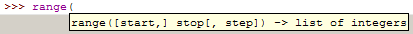

On the previous page we improved our dice rolling function so that it could be used for dice with other than 6 sides, however this also made it more complicated to use in the most common case because we have to provide a parameter specifying the number of sides. To avoid this complication Python allows us to specify the default values of arguments. 'Default' in this context means that if a value isn't given the default value is used. Here's our dice rolling function with the default number of sides set to 6.
import random
def dice_roll(sides = 6):
return random.randint(1,sides)
print 'Your results are:'
print '6-sided die:', dice_roll()
print '24-sided die:', dice_roll(24)and the output from a sample run is:
>>>
Your results are:
6-sided die: 5
24-sided die: 17
>>>Default argument values are common throughout Python. For example the
range function defaults to a starting value of 0 and a stepsize
of 1. IDLE shows you which arguments are requried and which ones have
defaults by enclosing optional arguments in square brackets in the pop-up
tool-tip, e.g.

It also shows you the type of object returned by the function — in this case a list of integers.